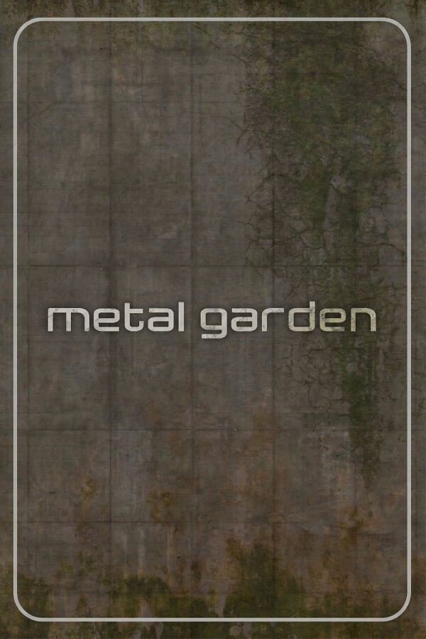

Metal Garden
Every archived year-end list appearance, including placement and points earned.
About the Game
A nomad wanders the far reaches of an overgrown megastructure, a world built for a forgotten purpose in which countless civilizations have lived entombed for ages.But when the mech they use to traverse it's vast distances breaks, they remain stranded in it's hostile wilds beneath a concrete sky.- - -Travel through an overgrown megastructure, and discover what lies beyond it. Metal Garden is a short, atmospheric singleplayer FPS game that can be finished in a single sitting (one to three hours).Explore architectual relics of eras near and long gone, meet mysterious and powerful factions that have emerged inside the megastructure, and fight your way through varied encounters in this tight and compact FPS campaign.FEATURES:A short, tightly designed shooter campaign.Unique setting filled with massive industrial structures taken over by nature.Atmospheric visuals inspired by mid-00s games.Responsive movement and combat.A sci-fi mystery story revealed through exploration of the game's spaces.An injury system that asks you to manage not only your health, but also your individual body parts.Multiple modifiers to change up your playthrough, from health system modifiers to enemy and item randomizers.
| Released | 2025-03-21 |
|---|---|
| Developer | Tinerasoft |
| Publisher | Tinerasoft |
| Genres | Action, Adventure, Indie |
| Platforms | PC |
SingleplayerSteam AchievementsSteam CloudAtmosphericFirst-PersonSci-fiPartial Controller SupportFPSExplorationDarkMystery3D
Where to Buy
Game information provided by RAWG.
Points by Year
List History
| Year | Source | List | Placement | Points |
|---|---|---|---|---|
| 2025 | Inverse | The 25 Best Games Of 2025, Ranked | 23 | 3 |